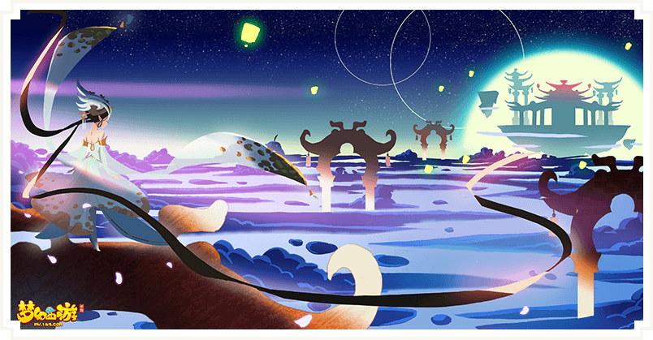
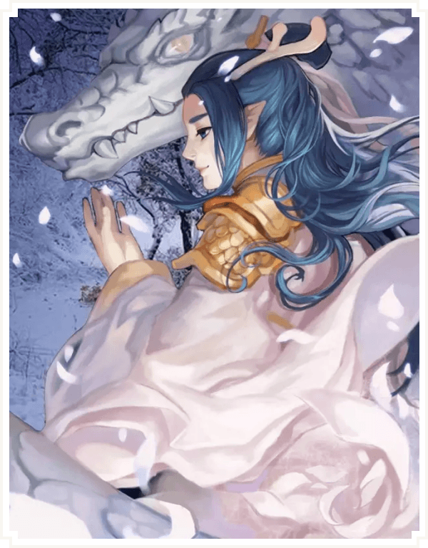
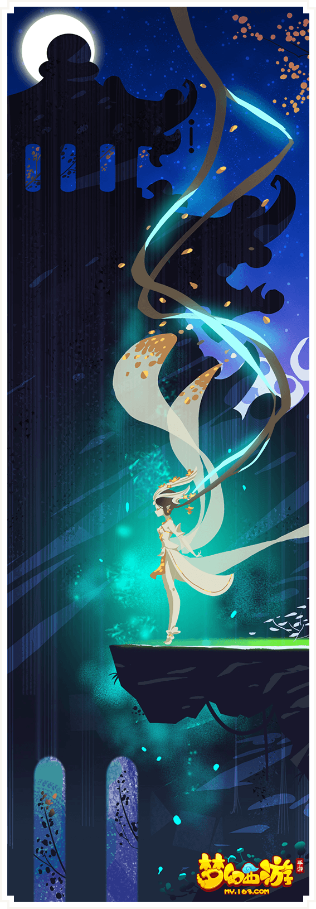
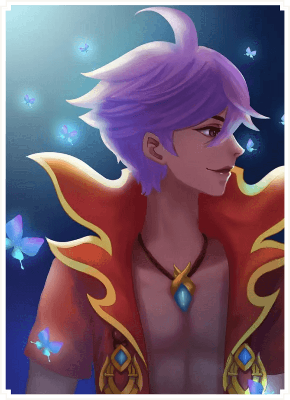
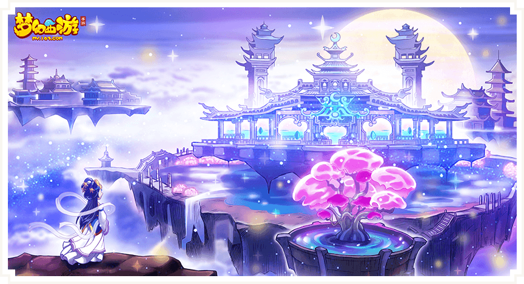

常姮屈膝于湖边，对着湖水轻声问：“你还好吗？”
镜湖的另一边隐隐有位少女瘦弱的身影，她周遭甚是昏暗。透过湖水的幻术，并看不清她的面容，模糊之中只有那双安静明亮的眼睛。
数年不见，那双眼睛显得愈发孤单和清冷了。
少女道：“放我出去好吗？”
常姮愣了一愣。
“我只想出去看一眼，就看一眼，”少女说，“只看一下，我就会回来，然后你再把阵眼封上，不会有人发现的。”
常姮面露难色。少女又轻声道：“你好多年没来看我了。这些年里，你去哪里了呢。”
“……”
“你是不是去过好多好多地方？见过好多好多有趣的事情？”少女问，“外面的世界是不是很好玩？”
常姮甚是踌躇，她想和少女说一些事，但又觉得此时谈论并不妥。
“你不回答，是因为我太烦了吗？”少女叹了口气，“可我也只能问你了，我只有你一个朋友。”
“……”
对方安静了一会儿，又说：“我长到这么大，都没见过，真正的光明是什么样的。”
常姮心中一软，思忖片刻，虽然略微迟疑，还是下了决心，解开那湖上的阵眼。
封印瞬间崩塌爆裂，湖水幻象立刻溃于无形，焕然四散。
这气势震得地面为之颤动，常姮胸口一窒，站立不稳，踉跄着往后坐倒。
常姮心中骇然，这不是她的力量，是那被封印住的少女的力量。
不待她做出反应，一道耀眼银光已冲出湖面，直上云霄。
常姮只来得及用尽气力，叫了一声她的名字，而少女充耳不闻，瞬间已追云踏月，如虹而上。
常姮眼睁睁看着她在月宫之上，显出灵兽真身。
银色的一匹灵兽依旧如她人形一般年幼瘦弱，然而她仰起头来，撕裂天地地长啸一声，无数月华瞬间被吸进她那小小的身躯之中。
这一切只在顷刻之间，光之宫转眼暗淡，昔日的清辉，繁华，迅速败落。
人间民众目睹天空中的这一幕，惊叫奔逃道：“是天狗！”
“天狗吞月了！”
天狗是影之宫天生的主人，具有吞噬一切光明的力量。
它此刻获得自由，高居于九天之上，意气扬扬，甚至嚣张暴戾，以至于它仿佛听不见常姮在下面撕心裂肺的叫喊。
“你骗我！”
常姮伏在地上，看起来形神皆乱，几欲痛哭，不知是因为自己闯下的滔天大祸，还是因为它翻脸无情的冷漠。
“你骗我！”
“啊，我只有这一次而已，”灵兽很是淡然无辜。它的眼眸如人形的时候一般，冷若寒星，全无暖意，这时候又带了点天真的孩子气的嘲讽，“比起你们对我做的，这算得了什么呢？”
“为什么要骗我！”常姮像是情绪震荡之致，百感交集，只能痛苦而混乱地重复，“只差一点，只差一点！你把一切都毁了！”
“有什么不对吗？你们可以肆无忌惮地夺走我的一切，”灵兽又一次扬起了它小小的头颅，“那么，我也能。”
荒芜之气迅速在光之宫里蔓延开来，所到之处迅速枯萎，凋落，沦于黑暗，犹如巨兽在吞噬这天地一般。
天狗食月，长达七日之久，三界震动，而凌霄殿通往月宫的路被星辰之力所扰动，再也无法通行。
为了保护月宫不陷入覆灭，月宫之主月灵，用尽最后一丝仙力，暂时将这一切冻结起来。
月宫封闭，阴影笼罩。
毕竟冰冻亦好过灭亡。
然而光之宫从此陷入冰封，连同耗尽气力的月灵。
时光仿佛停止，昔日繁华的月宫犹如一匹沉睡的困兽，谁也无法唤醒它。
如此过了多年，有些事情像是已淡出了世人的记忆。大家习惯了那冰封的月宫，也忘却了旧日繁荣。
直到一日，有所异动，袁天罡观天象，皓月当空，周遭繁星环绕，呈不规则的八卦之形。
“众星拱月？”
这一难得的天象，即将重返人间。
“这是月宫要复苏的征兆吗”
传言纷纷，不一而足。
作为一度与月宫关系紧密的仙族子弟，羽灵神一行人奉命去找嫦娥求证。
嫦娥道：“我也感觉到了，月宫大约是要醒来了。月桂在召唤我，虽然气息很微弱。”
她又颦眉道：“但天狗食月之后，世人关于月宫的记忆都已经消散了。没有过去的东西，是无法有新生的。不寻回这些记忆，就唤不回月华之力。”
“司命星君处有一块前世镜。透过它，可以重现当年的月宫。你们若是可以，就替我进入镜中，唤醒过往吧。”
司命星君半闭着眼睛，一副要睡不睡的样子，见他们到来，并不意外，连眼睛都懒得睁。
不等他们开口，司命星君便懒洋洋道：
“诺，前世镜在此，请便吧。”
“……”
龙太子：“他怎么能这么悠闲这么淡定的？好歹问一句啊！”
“他是司命星君啊，有什么是他没法提前得知的？”
玄彩娥说：“这简直就跟作弊一样！”
镜中的回忆太多，犹如散落的珠宝，处处光华流转，龙太子略微发愁：“从何看起，如何看得完呢？”
“自然是跳着看喽。”
三人将手放于镜上，凝神屏气，心中蓦然一震，心智已是入了镜中。
月宫之中，清辉遍洒，月桂盛开，灼灼其华。
此时的月宫并不热闹，但也并不孤清。
月桂中幻出了仙子月灵，月华凝成了仙人月明，两人在这宫中相伴而生。
每日在月桂之下对弈，抑或在清露之中抚琴轻歌，吹笛曼舞。日子倒也过得十分逍遥自在。

不知觉千年已过。
镜中这些世事如常，一成不变的时间，都可以翻篇得飞快，令它一闪即过。而一些特定的值得探寻的往事，便可以慢下来，容他们细细观看。
比如他们突然就见得某一日，月明占了一卦，而后道：“我们好像快有一只小狗了。”
月灵喜出望外：“真的吗！”
“是影宫孕育出来的天地灵兽，”月明笑道，“今夜它降生，我就去把它抱回来养。”
安静而空无一人的影宫之中，是夜果然多了一团银光。
待得光芒散去，便见得地上有了一个小小的身影。
这是一只通体银白，还睁不开的灵兽幼崽，看起来好似一头幼犬。
精于占卜的月明准时而至，喜孜孜地将它抱进怀中。
刚对上它的眼睛，她却是不由“啊”了一声，脸上蓦然变色。
不等大家反应过来，月明已见了恶鬼一般，一松手将那幼崽重重摔于地上，而后头也不回地仓皇离开。
上一刻才刚领会到怀抱温暖的幼崽猝不及防，在地面上发出一声悲鸣。玄彩娥不由心思一动：“它疼不疼的呀？”
龙太子肃然制止她的杂念：“嘘！”
他们屏息看着这段他们所全然陌生的，意外闯入脑中的过往。
他们眼见月明匆匆封印了影宫，阻断了光与影之间的通路，听得她在离开月宫，下界云游清修之前，郑重其事地交代月灵：“万万不可解开封印，否则月宫覆灭，万劫不复！”
三人皆不知何故，不明所以。
只能看得见的是，接下来很长一段时间，都只有月灵那日复一日的树下曼起舞，独自空对弈。
“……好寂寞啊。”
即便于他们来说，这镜中时光可以飞一般逝去，半柱香的时辰便已翻过去百年，但看着空有月桂相伴的月灵，也不免让人倍感孤独。
而还有谁，是比这更孤独的呢？
终于时光流转又慢了下来，他们看见，有一日，月宫出现了数名访客——是慕名而来的仙族子弟。
月宫清高孤冷，不食人间烟火，不自觉间却已名声在外，引得有志者前来拜师学艺。
玄彩娥心说：“呀！我好像看到我族的先辈了！”
的确那衣袂飘飘，颇有出尘之态的女弟子，是他们在仙族名人录上见过的。
他们都明白，月宫是自此，日益繁华起来了。
络绎不绝投入门下的仙族子弟，嫦娥飞升广寒之后接踵而至的人族修者，广纳天下的月灵，让光之宫前所未有地喧闹。
日日夜夜，人影翩跹，往来不绝，仙音阵阵。
而这羽衣霓裳的热闹里，却像是有什么东西，被安静地遗忘了。
回忆翻过去一篇又一篇，而后他们突然又在这镜中见到熟悉的身影。
这已经又是千年过后了，月宫在这千年之间，已从新芽萌发，到枝繁叶茂，而那灵兽的成长却异常缓慢。
大概是被封印的影宫灵气微弱的缘故，这么多年了，它依旧显得瘦弱幼小。
这日它在一团微光之中，苦苦挣扎了许久，终于慢慢幻为人形。
玄彩娥：“哇哇哇！！！”
羽灵神：“……你稍微克制一下！！”
相较于原形，它的人形更只是可爱柔弱的幼童模样。
梳着两个发髻，留着整整齐齐的覆额银发，肌肤雪白，大眼朦胧，一脸懵懂和天真。
它似乎也很困惑，似不知自己身于何方，又为何在此。它兜兜转转了半天，也未找得到出路。
它开口了，是奶声奶气的幼童嗓音：“有人吗？”
“……”
“有人在吗？”
昏暗寂静的影宫没有人回答它，也没有人在它身边，因为没有足够的光，连影子也照不出。
这简直是这世上最为孤寂黑暗的角落，而它不知为何，会被光明所抛弃，而独自遗留在这里。
三人的神识于镜中看着它跌跌撞撞，四处摸索，都未免生出不忍，然而他们只是这些记忆的看客，和它一样无能为力。
仅能勉强化为人类幼童的灵兽，循着这黑暗里仅有的，细弱如丝，难以捕捉的微光，找到了镜湖。
镜湖其实并不是真正的湖，湖水只是幻象。底下是当年月明仙人封印影宫留下的阵眼。
这将它囚在影宫之中的结界，却是它此刻唯一的光源。

此后日日夜夜，它都在那里守着待着，半步不移。
透过镜湖，它能看得见对面的繁华热闹，有人于湖畔嬉戏，风吹叶动，月桂花落，繁星漫天。
初时它满是好奇和惊喜，试图一遍遍去和那些人说话，伸手去碰触。
久而久之，它终于意识到，那热闹与它全然无关。
他们看见它在迷惘了数日之后，开始徒劳地尝试去撞那封印。
“别傻了！怎么可能撞得破！！你自己头会破的！”
龙太子：“…蛾子你不要在心里一直尖叫，我们的头才要裂了。”
“……”
羽灵神有点头疼：“你也别哭了。”
它那小小的额头上都撞出了血痕，然而一切都不为所动。
它喊：“有人吗？”
沉寂的影宫之中，连回音都被黑暗吞噬。
“为什么要这样对它？为什么要这样对它？”
“……谁知道呢。”
其实他们此时也觉得略微怪异，他们为追寻回忆而来，前世镜固然可追溯过往，可过往有千千万万，并非都与月宫繁华覆灭有关，并非都是他们想探究的。
而这些，又是谁想寻回的过往呢？
光之宫中，月灵在教子弟们学习技艺，利用时月之变，操纵月华之力，一切如常。
而影宫之中的幼童，在这漫长的时间之后，终于又长大了一些，初露少女模样。
一日有名新入门的小弟子被责罚，在镜湖边上思过。
尽管这么多年来，从未有人听见过它的呐喊，但灵兽依旧没有放弃过。
“你听得见我吗？”
小弟子愕然地抬起头来，四处张望，而后望向湖中。
“！！！”它颤抖着，不敢置信道，“你听得见？！”
“你是谁？”小弟子一脸的惊奇，“你为什么在那里？”
它说：“……我也不知道。”而后它又急忙忙地：“我不知道，不过这不打紧！你能听见我，那你能看见我吗？你能过得来吗？你是谁？”
小弟子道：“我叫常姮。”
“啊！”羽灵神突然打了个激灵，大叫一声：“我知道了，那就是天狗！”
“！！！”
三人都心头一震，感受到了彼此的惊愕和意外。
天狗吞月，这等怪兽是如何突破封印为害世间，坊间流传种种说法。有说是天狗要挟常姮，也有说是天狗诱惑常姮，令其狼狈为奸。反正此事如今已不可考证，或者是，并不重要。
在传说中，天狗是吞月的怪兽，他们从未见过，只从各方传言里想象它的形容，无非是血盆大口，青面獠牙，凶神恶煞。
而那“怪兽”如今就在他们眼前，勿用说真身都不骇人，人形更是瘦弱不堪。
接下来他们心情复杂，又惊疑不定地看着常姮和这灵兽迅速成为挚友。
“你又要出门游历了吗？”
“是的，”常姮道，“我毕竟是师姐，斩妖除魔之事，还是该我去多做的。”
“嗯……你还会记得来看我吗？”
“当然啊，”常姮笑着伸手似想点点它的额头，然而所触之处只是虚无，她温柔道，“七日后我回来，就会找时间陪你的。”
“我……”
“我知道，你只有我一个朋友嘛。”
然而七日过去，常姮并没有来。
一年过去，她还是没有来。
三年过去，她依旧没有出现。
灵兽始终守在那里，不敢离开半步，生怕错过她，或者关于她的消息。
终于有一日，它于等待的困顿中，听见镜湖边上，有几个小弟子在酸溜溜地闲聊，于是它猛然醒来。
“常姮师姐都和南海龙王之子订婚了，你我还是没有着落。真是人比人。”
“她也算得上是因祸得福呢。”
“大难不死必有后福喽。”
“你们也不用这样，师姐能有个好去处，只要她有心记得，终归能提携我们一把的。”
“她之前就时常久出不归，多半忙着经营此事，早就无心师门，还能记得我们吗？早把整个月宫上下都忘了吧。”
“……”
弟子们闲谈着走远了。
灵兽依旧独自坐在镜湖另一边的暗影里，一声不出地，维持着这几年里它耐心等待的姿势。
“蛾子你怎么了？”
“我不想看下去了，我要喘不过气了！后面发生什么事我也一点都不想知道了！”
羽灵神只得说：“行行行，后面的我们先不看，我们找找常姮的那部分回忆可以吧？”
温柔和蔼的月灵难得面露严厉之色：“你和上古蛇魔那一战，大难不死已属万幸，不好好静养，急着去做什么呢？”
“我……”
“你总是偷偷摸摸去镜湖，只怕不单是去看风景吧？”
常姮闻言，立刻扑通跪了下来：“师父！”
她又连磕了几个头：“求求您，把它放出来吧，它自来到这世上，就被关在影宫，这多年，没有人，没有光，没有声音。师父，将心比心，于心何忍……”
月灵咬一咬牙，说：“你月明师叔，就是因为从它眼里看见月宫覆灭的景象，才把它封印起来的。”
她摇头道：“我如何能拿你们，拿整个月宫，来冒这个险？”
常姮忙道：“它心地良善，绝非恶兽，真的，我感觉得到，我愿以我性命担保！”
月灵说：“谁知道你不是被它所蛊惑呢？”
常姮无言以对，愣了半晌，低低道：“这不公平。”
“我不能证明我并非为它所惑，所以我不可信。那月明师叔的预言又何尝可以证明呢？”
“只是因为一个可能会应验的占卜，只是因为它将来也许可能会做的事，就把它囚禁了数千年。换做我等，别说千年，百年就已是致死致疯的酷刑。师父，您宅心仁厚，博爱天下，何至于独对它那么残忍？”
常姮哽咽道：“我从未见过，有人因为他未做过的事而受惩罚。它到底做错过什么？又何罪之有？”
室内静默半晌，月灵终于有所动作，取出一个盒子。
“这里面，是枚善念珠，”月灵叹了口气，道，“是沐浴佛光万年的金莲子转成的，世间仅有一枚，也只能用一次。”
“善念珠能辨人心善恶，只要你心善，愿善，带着它，行千件善事，愿望便能成真。”
“你有心许它重获自由，就拿去吧。”
要用心行善，而不敷衍，绝不是容易的事。
常姮即刻下界，不敢心有旁骛，不敢有半分懒散懈怠，日夜兼程，走遍世间，足足三年，终于做完九百九十九件。
恰逢南海龙王前来提亲，月灵将她急召回宫。
只差一件了。
只差那么一点，一点而已。
玄彩娥颤声说：“我不想看了，我不想知道后面发生什么事。”
羽灵神和龙太子都沉默不语。
后来会发生什么，如今的他们其实心中都明白。
回忆还在继续。灵兽一声厉啸，无可回头地冲破封印的时候，玄彩娥猛地捂住了眼睛。
月宫从初兴至覆灭的回忆，都已寻回了，而三人都默不作声，并无法振奋。

那些不为人知的孤独，绝望，愤懑，挣扎，令人心中百般滋味，无从说起。
羽灵神突然出声：“我不明白的是，为什么我们会看到这些呢？这部分并不是我们想探究的吧？”
司命星君半闭着眼睛，道：“是因为有别的人想探究。除了你们，还有人的神识也一起进了前世镜。”
三人心中一凛：“天狗？！”
吞月之后，月宫冰封，并没有人清楚它的行踪。
都知道它灵力高强，然而到这神不知鬼不觉的地步，还是令他们不免心惊。
“那它不就完全知道我们打算做什么吗？那……”
后面的话没有说出口，彼此却都心知肚明。
天狗的修为之强，已超出冰封于月宫的月灵，不知所踪的月明。更不用说他们这些小小的门派弟子。
何况它在暗，他们在明。
试图让月宫复苏，真的可能，可行，有机会，有意义吗？
羽灵神说：“世上的事，不试试，又怎么知道呢？”
“对，”龙太子道，“大丈夫，便是要明知不可为而为之。”
他们不再耽搁，立即着手搜集月华。
众星拱月天象重现之刻，便是月华最强之时。众人倾尽毕生之力，在那熠熠星辉之下，将月华凝起。
一道白光如同长练，奔云踏雾，直冲月宫，在这冰封之地与凌霄殿之间，重新连起一条通路。
时隔多年，终于又有人踏进月宫。
月宫仍是当年被封闭时刻的模样，没有多一分生机，也没有多一分衰败。
月灵躺在巨大的冰晶之中，那冰晶犹如琥珀一般将她包裹封存，她看起来和多年之前并无两样。
需要的只是月华之力而已。
这里一切的复苏，都需要月华，也只需要月华。
只要天狗不在他们苦苦吸纳收集，奋力支撑的时候，突然现身，一口吞噬他们的全部心力。
那就算月华凝聚得再慢，再薄弱，也总归是有希望的。
最担心的事并没有发生，一切都在有条不紊，按部就班地进行。
月灵苏醒了，月桂抽出新枝，落于枝上的小鸟开始歌唱，玫瑰也迅速绽出新蕾。
月宫在一点一点地，缓缓恢复生机。
不免有人担忧道：“要是天狗再度吞月的话，该怎么办？”
毕竟天狗若想再次吞噬目前这点可怜的月华之力，可以说是轻而易举。
龙太子道：“兵来将挡，水来土掩呗。”
然而到月宫初步恢复繁荣，那令人闻风丧胆的灵兽也没有出现。
众人对此议论纷纷。
“那怪兽去哪了呢？”
“逃跑了吗？”
“不太可能吧。”
玄彩娥说：“会不会是，这个地方有它最不好的回忆，
可是又有过对它最好的人，它也不知道该怎么办，所以就离开了呢。”
这世界上唯一一个对它好的人，这天地之间待它最好的那个人。
而它辜负了她。
有人取笑道：“蛾子你好天真。”
羽灵神在她要冲出去争辩之前，按住她的肩，轻轻拍了一拍。
毕竟不是所有人都能了解。
还有一件是所有人都不了解的，便是天狗的行踪。
它犹如凭空消失了一般，全无痕迹，仿佛它从未来过。
只有旧日影宫之中的残像——隔着镜湖，一边是不尽繁华，一边是银发少女那独自等待着的，小小的，孤独的背影。
 微信二维码
微信二维码 QQ空间
QQ空间 QQ好友
QQ好友